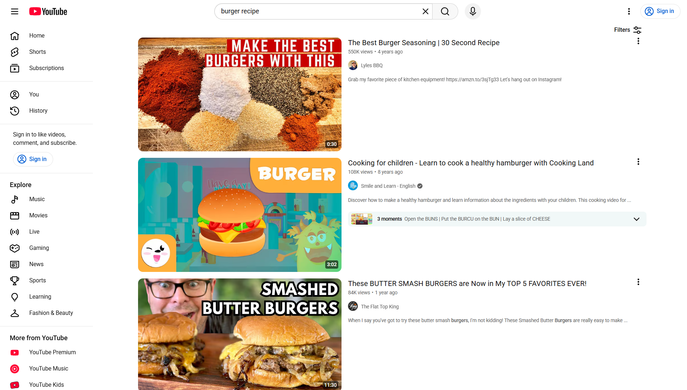
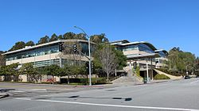
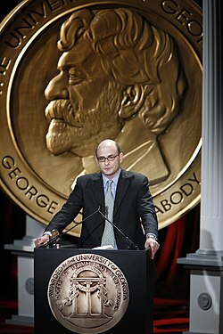
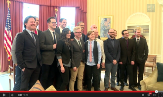
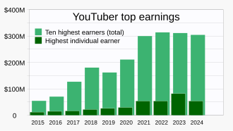

YouTube
Source: https://en.wikipedia.org/wiki/YouTube
Category: products_media
Depth: 1
Summary
YouTube is an American online video sharing platform owned by Google. YouTube was founded on February 14, 2005, by Chad Hurley, Jawed Karim, and Steve Chen, who were former employees of PayPal. Headquartered in San Bruno, California, it is the second-most-visited website in the world, after Google itself. In January 2024, YouTube had reached more than 2.7 billion monthly active users, who collectively watched more than one billion hours of video every day. As of May 2019, videos were being uploaded to the platform at a rate of more than 500 hours of video per minute, and as of mid-2024, there were approximately 14.8 billion videos in total.
Images





Full Article
Video-sharing platform
For the company's channel on YouTube, see YouTube (YouTube channel).
YouTube is an American online video sharing platform owned by Google. YouTube was founded on February 14, 2005, by Chad Hurley, Jawed Karim, and Steve Chen, who were former employees of PayPal. Headquartered in San Bruno, California, it is the second-most-visited website in the world, after Google itself. In January 2024, YouTube had reached more than 2.7 billion monthly active users, who collectively watched more than one billion hours of video every day. As of May 2019[update], videos were being uploaded to the platform at a rate of more than 500 hours of video per minute, and as of mid-2024[update], there were approximately 14.8 billion videos in total.
On November 13, 2006, YouTube was purchased by Google for US$1.65 billion (equivalent to $2.44 billion in 2025). Google expanded YouTube's business model from generating revenue through advertisements alone to paid offerings such as movies and exclusive programming explicitly produced for YouTube. It also offers YouTube Premium, a paid subscription option for watching content without ads. YouTube incorporated the Google AdSense program, generating more revenue for both YouTube and approved content creators. In 2023, YouTube's advertising revenue totaled $31.7 billion, a 2% increase from the $31.1 billion reported in 2022. From Q4 2023 to Q3 2024, YouTube's combined revenue from advertising and subscriptions exceeded $50 billion.
Since its purchase by Google, YouTube has expanded beyond the core website, creating mobile apps, network television, games, and the ability to link with other platforms. Video categories on YouTube include music videos, video clips, news, short and feature films, songs, documentaries, movie trailers, teasers, TV spots, live streams, vlogs, and more. Most content is generated by individuals, including collaborations between YouTubers and corporate sponsors. Established media, news, and entertainment corporations have also created and expanded their visibility on YouTube channels to reach bigger audiences.
YouTube has had unprecedented social impact, influencing popular culture, internet trends, and creating multimillionaire celebrities. Despite its growth and success, the platform has been criticized for its facilitation of the spread of misinformation and copyrighted content, routinely violating its users' privacy, excessive censorship, endangering the safety of children and their well-being, and for its inconsistent implementation of platform guidelines.
History
Main article: History of YouTube
See also: Timeline of online video
Founding and initial growth (2005–2006)
YouTube was founded by Chad Hurley, Jawed Karim, and Steve Chen. The three were early employees at PayPal and had become wealthy after eBay's acquisition of the company. Hurley had studied design at the Indiana University of Pennsylvania, and Chen and Karim studied computer science together at the University of Illinois Urbana-Champaign.
According to a story that has often been repeated in the media, Hurley and Chen developed the idea for YouTube during the early months of 2005, after they had experienced difficulty sharing videos that had been shot at a dinner party at Chen's apartment in San Francisco. Karim did not attend the party and denied that it had occurred, but Chen remarked that the idea that YouTube was founded after a dinner party "was probably very strengthened by marketing ideas around creating a story that was very digestible".
Karim said the inspiration for YouTube came from the Super Bowl XXXVIII halftime show controversy when Janet Jackson's breast was briefly exposed by Justin Timberlake during the halftime show. Karim could not easily find video clips of the incident and the 2004 Indian Ocean tsunami online, which led to the idea of a video-sharing site. Hurley and Chen said that the original idea for YouTube was a video version of an online dating service and had been influenced by the website Hot or Not. They created posts on Craigslist asking attractive women to upload videos of themselves to YouTube in exchange for a $100 reward. Difficulty in finding enough dating videos led to a change of plans, with the site's founders deciding to allow all types of videos.
YouTube began as a venture capital–funded technology startup. Between November 2005 and April 2006, the company raised money from various investors, with Sequoia Capital and Artis Capital Management being the largest two. YouTube's early headquarters were situated above a pizzeria and a Japanese restaurant in San Mateo, California. In February 2005, the company registered www.youtube.com. The first video was uploaded on April 23, 2005. Titled "Me at the zoo", it shows co-founder Jawed Karim at the San Diego Zoo and can still be viewed on the site. The same day, the company launched a public beta and by November, a Nike ad featuring Ronaldinho became the first video to reach one million total views. The site exited beta in December 2005, by which time the site was receiving 8 million views a day. Clips at the time were limited to 100 megabytes, as little as 30 seconds of footage.
YouTube was not the first video-sharing site on the Internet; Vimeo was founded in November 2004, though that site remained a side project of its developers from CollegeHumor. On December 17, 2005, the same week YouTube exited beta, NBCUniversal Saturday Night Live ran a sketch "Lazy Sunday" by The Lonely Island. Besides helping to bolster ratings and long-term viewership for Saturday Night Live, "Lazy Sunday"'s status as an early viral video helped establish YouTube as an important website. Unofficial uploads of the skit to YouTube drew in more than five million collective views by February 2006 before they were removed when NBCUniversal requested it two months later based on copyright concerns. Despite eventually being taken down, these duplicate uploads of the skit helped popularize YouTube's reach and led to the upload of more third-party content. The site grew rapidly; in July 2006, the company announced that more than 65,000 new videos were being uploaded every day and that the site was receiving 100 million video views per day.
The choice of the name youtube.com led to problems for a similarly named website, utube.com. That site's owner, Universal Tube & Rollform Equipment (Universal Tube), filed a lawsuit against YouTube in November 2006, after being regularly overloaded by people looking for YouTube. Universal Tube subsequently changed its website to www.utubeonline.com.
"Broadcast Yourself" era (2006–2013)
On October 9, 2006, Google announced that they had acquired YouTube for $1.65 billion in Google stock. The deal was finalized on November 13, 2006. Google's acquisition launched newfound interest in video-sharing sites; IAC, which now owned Vimeo, focused on supporting the content creators to distinguish itself from YouTube. It was at this time that YouTube adopted the slogan "Broadcast Yourself".
The company experienced rapid growth. The Daily Telegraph wrote that in 2007, YouTube consumed as much bandwidth as the entire Internet in 2000. By 2010, the company had reached a market share of around 43% and more than 14 billion views of videos, according to comScore. That year, the company simplified its interface to increase the time users would spend on the site.
In 2011, more than three billion videos were being watched each day with 48 hours of new videos uploaded every minute. Most of these views came from a relatively small number of videos; according to a software engineer at that time, 30% of videos accounted for 99% of views on the site. That year, the company again changed its interface and at the same time, introduced a new logo with a darker shade of red. A subsequent interface change, designed to unify the experience across desktop, TV, and mobile, was rolled out in 2013. By that point, more than 100 hours were being uploaded every minute, increasing to 300 hours by November 2014.
During that time, the company also went through some organizational changes. In October 2006, YouTube moved to a new office in San Bruno, California. Hurley announced that he would be stepping down as chief executive officer of YouTube to take an advisory role and that Salar Kamangar would take over as head of the company in October 2010. In April 2009, YouTube partnered with Vevo. In April 2010, Lady Gaga's "Bad Romance" became the most-viewed video, becoming the first video to reach 200 million views on May 9, 2010.
YouTube faced a major lawsuit by Viacom International in 2011 that nearly resulted in the discontinuation of the website. The lawsuit was filed due to alleged copyright infringement of Viacom's material by YouTube. However, the United States Court of Appeals for the Second Circuit ruled that YouTube was not liable, and thus, YouTube won the case in 2012.
Susan Wojcicki's leadership (2014–2023)
Susan Wojcicki was appointed CEO of YouTube in February 2014. In January 2016, YouTube expanded its headquarters in San Bruno by purchasing an office park for $215 million. The complex has 51,468 square metres (554,000 square feet) of space and can house up to 2,800 employees. In August 2017, YouTube made its "Polymer" Material Design interface the default and launched a new logo featuring the service's play button.
Through this period, YouTube tried several new ways to generate revenue beyond advertisements. In 2013, YouTube launched a pilot program for content providers to offer premium, subscription-based channels. This effort was discontinued in January 2018 and relaunched in June, with US$4.99 channel subscriptions. These channel subscriptions complemented the existing Super Chat ability, launched in 2017, which allows viewers to donate between $1 and $500 to have their comment highlighted. In 2014, YouTube announced a subscription service known as "Music Key", which bundled ad-free streaming of music content on YouTube with the existing Google Play Music service. The service continued to evolve in 2015 when YouTube announced YouTube Red, a new premium service that would offer ad-free access to all content on the platform (succeeding the Music Key service released the previous year), premium original series, and films produced by YouTube personalities, as well as background playback of content on mobile devices. YouTube also released YouTube Music, a third app oriented towards streaming and discovering the music content hosted on the YouTube platform.
The company also attempted to create products appealing to specific viewers. YouTube released a mobile app known as YouTube Kids in 2015, which was designed to provide an experience optimized for children. It features a simplified user interface, curated selections of channels featuring age-appropriate content, and parental control features. Also in 2015, YouTube launched YouTube Gaming—a video gaming-oriented vertical and app for videos and live streaming, intended to compete with the Amazon.com-owned Twitch. In April 2018, a shooting occurred at YouTube's headquarters in San Bruno, California, which wounded four and resulted in the death of the shooter.
By February 2017, one billion hours of YouTube videos were being watched every day, and 400 hours worth of videos were uploaded every minute. Two years later, the uploads had risen to more than 500 hours per minute. During the COVID-19 pandemic, when most of the world was under stay-at-home orders, usage of services like YouTube significantly increased. Forbes estimated that YouTube accounted for 16% of all internet traffic, as of 2024[update], up from 11% in 2018, before the pandemic. In response to EU officials requesting that such services reduce bandwidth to make sure medical entities had sufficient bandwidth to share information, YouTube and Netflix said they would reduce streaming quality for at least thirty days as to cut bandwidth use of their services by 25% to comply with the EU's request. YouTube later announced that they would continue with this move worldwide: "We continue to work closely with governments and network operators around the globe to do our part to minimize stress on the system during this unprecedented situation."
After a 2018 complaint alleging violations of the Children's Online Privacy Protection Act (COPPA), the company was fined $170 million by the FTC for collecting personal information from minors under the age of 13. YouTube was also ordered to create systems to increase children's privacy. Following criticisms of its implementation of those systems, YouTube started treating all videos designated as "made for kids" as liable under COPPA on January 6, 2020. Joining the YouTube Kids app, the company created a supervised mode, designed more for tweens, in 2021. Additionally, to compete with TikTok and Instagram Reels, YouTube released YouTube Shorts, a short-form video platform. During that period, YouTube entered disputes with other tech companies. For over a year, in 2018–19, no YouTube app was available for Amazon Fire products. In 2020, Roku removed the YouTube TV app from its streaming store after the two companies were unable to reach an agreement.
After testing earlier in 2021, YouTube removed public display of dislike counts on videos in November 2021, claiming the reason for the removal was, based on its internal research, that users often used the dislike feature as a form of cyberbullying and brigading. While some users praised the move as a way to discourage trolls, others felt that hiding dislikes would make it harder for viewers to recognize clickbait or unhelpful videos and that other features already existed for creators to limit bullying. YouTube co-founder Jawed Karim referred to the update as "a stupid idea" and said that the real reason behind the change was "not a good one, and not one that will be publicly disclosed." He felt that users' ability on a social platform to identify harmful content was essential, saying, "The process works, and there's a name for it: the wisdom of the crowds. The process breaks when the platform interferes with it. Then, the platform invariably declines." Shortly after the announcement, software developer Dmitry Selivanov created Return YouTube Dislike, an open-source, third-party browser extension for Chrome and Firefox that allows users to see a video's number of dislikes. In a letter published on January 25, 2022, by then YouTube CEO Susan Wojcicki, acknowledged that removing public dislike counts was a controversial decision, but reiterated that she stands by this decision, claiming that "it reduced dislike attacks."
In 2022, YouTube launched an experiment where the company would show users who watched longer videos on TVs a long chain of short unskippable adverts, intending to consolidate all ads into the beginning of a video. Following public outrage over the unprecedented amount of unskippable ads, YouTube "ended" the experiment on September 19 of the same year. In October, YouTube announced that they would be rolling out customizable user handles in addition to channel names, which would also become channel URLs.
Neal Mohan leadership (2023–present)
On February 16, 2023, Wojcicki announced that she would step down as CEO, with Neal Mohan named as her successor. Wojcicki took on an advisory role for Google and parent company Alphabet. Wojcicki died a year and a half later from non-small-cell lung cancer, on August 9, 2024. In late October 2023, YouTube began cracking down on the use of ad blockers on the platform. Users of ad blockers may be given a pop-up warning saying "Video player will be blocked after 3 videos". Users of ad blockers are shown a message asking them to allow ads or inviting them to subscribe to the ad-free YouTube Premium subscription plan. YouTube says that the use of ad blockers violates its terms of service. In April 2024, YouTube announced it would be "strengthening our enforcement on third-party apps that violate YouTube's Terms of Service, specifically ad-blocking apps". Starting in June 2024, Google Chrome announced that it would be replacing Manifest V2 in favor of Manifest V3, effectively killing support for most ad-blockers. Around the same time, YouTube started using server-side ad injection, which allows the platform to inject the ads directly into the video, instead of having the ad as a separate file which can be blocked.
In September 2023, YouTube announced an in-app gaming platform called Playables. It was made accessible to all users in May 2024, expanding from an initial offering limited to premium subscribers. In December 2024, YouTube began testing a new multiplayer feature for that service, supporting multiplayer functionality across desktop and mobile devices. As of December 2024[update] the Playables catalog has over 130 games in various genres, including trivia, action, and sports. In December 2024, YouTube introduced new guidelines prohibiting videos with clickbait titles to enhance content quality and combat misinformation. The platform aims to penalize creators using misleading or sensationalized titles, with potential actions including video removal or channel suspension. According to YouTube, this guideline will gradually roll out in India first, but will expand to more countries in the coming months.
On February 14, 2025, YouTube celebrated 20 years since its founding. On July 30, 2025, amid the implementation of the Online Safety Act 2023 in the United Kingdom, Google announced that it would begin to enforce "age assurance" policies for selected users in the United States as a trial. Machine learning will be used to determine the age of the user (regardless of any account information indicating their age) and restrict access to certain content and features across all Google properties, including YouTube (including, in particular, disabling personalized advertising and enabling certain digital wellbeing limits), if they are assumed to be under 18. On YouTube, this will be based on factors such as searches and video history, and the age of the account. The user must go through age verification via payment, scanned ID, or selfie to access all features if they are detected to be a minor. On April 9, 2025, YouTube expressed support for the NO FAKES Act of 2025, introduced by Senator Chris Coons (D-DE) and Senator Marsha Blackburn (R-TN), and announced an expansion of its pilot program that is designed to identify content generated by AI.
On September 23, 2025, YouTube parent company Alphabet announced that it would reinstate creators who were banned for spreading misinformation about COVID-19 and the 2020 U.S. presidential election. Within the context of the suspension of Jimmy Kimmel and debates about free speech in the United States, Vice President JD Vance defended Kimmel's suspension and instead cited a letter sent by Alphabet legal counsel Daniel F. Donovan to U.S. House Judiciary Committee chairman Jim Jordan, claiming the Biden administration pressured YouTube to remove "non-violative user-generated content" containing misinformation about the COVID-19 pandemic and the 2020 election, and announced that it would reinstate content creators previously banned due to the cited content; however, such claims have not formally been proven, and the U.S. Supreme Court dismissed in 2024 the First Amendment case Murthy v. Missouri (which claimed the Biden administration had pressured social media companies to censor conservative views, government criticism, and COVID-19 misinformation), ruling 6–3 that neither the attorneys general of Missouri and Louisiana nor other respondents had standing to bring the case. The decision of Alphabet to bring back YouTube creators who engaged in misinformation was criticized for prioritizing "free expression" over "facts".
Senior leadership
YouTube has been led by a CEO since its founding in 2005, beginning with Chad Hurley, who led the company until 2010. After Google acquired YouTube, the CEO role was retained. Salar Kamangar took over Hurley's position and kept the job until 2014. He was replaced by Susan Wojcicki, who later resigned in 2023. On February 16, 2023, Neal Mohan was appointed as the new CEO.
Features
Main article: List of YouTube features
YouTube offers different features based on user verification, such as standard or basic features like uploading videos, creating playlists, and using YouTube Music, with limits based on daily activity (verification via phone number or channel history increases feature availability and daily usage limits); intermediate or additional features like longer videos (over 15 minutes), live streaming, custom thumbnails, and creating podcasts; advanced features like content ID appeals, embedding live streams, applying for monetization, clickable links, adding chapters, and pinning comments on videos or posts.
Videos
Main article: List of YouTube videos
In January 2012, it was estimated that visitors to YouTube spent an average of 15 minutes a day on the site, in contrast to the four or five hours a day spent by a typical US citizen watching television. In 2017, viewers on average watched YouTube on mobile devices for more than an hour every day. In December 2012, two billion views were removed from the view counts of Universal and Sony music videos on YouTube, prompting a claim by The Daily Dot that the views had been deleted due to a violation of the site's terms of service, which ban the use of automated processes to inflate view counts. That was disputed by Billboard, which said that the two billion views had been moved to Vevo, since the videos were no longer active on YouTube.
On August 5, 2015, YouTube patched the formerly notorious behavior, which caused a video's view count to freeze at "301" (later "301+") until the actual count was verified to prevent view count fraud. YouTube view counts again began updating in real time. Since September 2019, subscriber counts are abbreviated. Only three leading digits of channels' subscriber counts are indicated publicly, compromising the function of third-party real-time indicators such as Social Blade. Exact counts remain available to channel operators inside YouTube Studio.
On November 11, 2021, after testing out this change in March of the same year, YouTube announced it would start hiding dislike counts on videos, making them invisible to viewers. The company stated the decision was in response to experiments which confirmed that smaller YouTube creators were more likely to be targeted in dislike brigading and harassment. Creators will still be able to see the number of likes and dislikes in the YouTube Studio dashboard tool, according to YouTube. YouTube has an estimated 14.8 billion videos with about 4% of those never having a view. Just over 85% have fewer than 1,000 views.
Copyright issues
Main article: YouTube copyright issues
Further information: § Revenue to copyright holders
YouTube has faced numerous challenges and criticisms in its attempts to deal with copyright, including the site's first viral video, Lazy Sunday, which had to be taken down due to copyright concerns. At the time of uploading a video, YouTube users are shown a message asking them not to violate copyright laws. Despite this advice, many unauthorized clips of copyrighted material remain on YouTube. YouTube does not view videos before they are posted online, and it is left to copyright holders to issue a DMCA takedown notice pursuant to the terms of the Online Copyright Infringement Liability Limitation Act. Any successful complaint about copyright infringement results in a YouTube copyright strike. Three successful complaints for copyright infringement against a user account will result in the account and all of its uploaded videos being deleted. From 2007 to 2009 organizations including Viacom, Mediaset, and the English Premier League have filed lawsuits against YouTube, claiming that it has done too little to prevent the uploading of copyrighted material.
In August 2008, a US court ruled in Lenz v. Universal Music Corp. that copyright holders cannot order the removal of an online file without first determining whether the posting reflected fair use of the material. YouTube's owner Google announced in November 2015 that they would help cover the legal cost in select cases where they believe fair use defenses apply. In the 2011 case of Smith v. Summit Entertainment LLC, professional singer Matt Smith sued Summit Entertainment for the wrongful use of copyright takedown notices on YouTube. He asserted seven causes of action, and four were ruled in Smith's favor. In April 2012, a court in Hamburg ruled that YouTube could be held responsible for copyrighted material posted by its users. On November 1, 2016, the dispute with GEMA was resolved, with Google content ID being used to allow advertisements to be added to videos with content protected by GEMA.
In April 2013, it was reported that Universal Music Group and YouTube have a contractual agreement that prevents content blocked on YouTube by a request from UMG from being restored, even if the uploader of the video files a DMCA counter-notice. As part of YouTube Music, Universal and YouTube signed an agreement in 2017, which was followed by separate agreements other major labels, which gave the company the right to advertising revenue when its music was played on YouTube. By 2019, creators were having videos taken down or demonetized when Content ID identified even short segments of copyrighted music within a much longer video, with different levels of enforcement depending on the record label. Experts noted that some of these clips said qualified for fair use.
Content ID
Main article: Content ID
In June 2007, YouTube began trials of a system for automatic detection of uploaded videos that infringe copyright. Google CEO Eric Schmidt regarded this system as necessary for resolving lawsuits such as the one from Viacom, which alleged that YouTube profited from content that it did not have the right to distribute. The system, which was initially called "Video Identification" and later became known as Content ID, creates an ID File for copyrighted audio and video material, and stores it in a database. When a video is uploaded, it is checked against the database, and flags the video as a copyright violation if a match is found. When this occurs, the content owner has the choice of blocking the video to make it unviewable, tracking the viewing statistics of the video, or adding advertisements to the video.[citation needed]
An independent test in 2009 uploaded multiple versions of the same song to YouTube and concluded that while the system was "surprisingly resilient" in finding copyright violations in the audio tracks of videos, it was not infallible. The use of Content ID to remove material automatically has led to controversy in some cases, as the videos have not been checked by a human for fair use. If a YouTube user disagrees with a decision by Content ID, it is possible to fill in a form disputing the decision. Before 2016, videos were not monetized until the dispute was resolved. Since April 2016, videos continue to be monetized while the dispute is in progress, and the money goes to whoever won the dispute. Should the uploader want to monetize the video again, they may remove the disputed audio in the "Video Manager". YouTube has cited the effectiveness of Content ID as one of the reasons why the site's rules were modified in December 2010 to allow some users to upload videos of unlimited length.
Russia
In 2021, two accounts linked to RT DE, the German channel of the Russian state-owned RT network, were removed for breaching YouTube's policies relating to COVID-19. Russia threatened to ban YouTube after the platform deleted two German RT channels in September 2021. Shortly after the Russian invasion of Ukraine in 2022, YouTube removed all channels funded by the Russian state. YouTube expanded the removal of Russian content from its site to include channels described as 'pro-Russian'. In June 2022, the War Gonzo channel run by Russian military blogger and journalist Semyon Pegov was deleted.
In July 2023, YouTube removed the channel of British journalist Graham Phillips, active in covering the war in Donbas from 2014. In August 2023, a Moscow court fined Google 3 million rubles, around $35,000, for not deleting what it said was "fake news about the war in Ukraine". In October 2024, a Russian court fined Google 2 undecillion rubles (equivalent to US$20 decillion) for restricting Russian state media channels on YouTube. State news agency TASS reported that Google is allowed to return to the Russian market only if it complies with the court's decision. Kremlin spokesperson Dmitry Peskov labeled the court decision as "symbolic" and warned Google that it "should not be restricting the actions of our broadcasters on its platform."
April Fools gags
See also: List of Google April Fools' Day jokes
YouTube featured an April Fools prank on the site on April 1 of every year from 2008 to 2016. In 2008, all links to videos on the main page were redirected to Rick Astley's music video "Never Gonna Give You Up", a prank known as "rickrolling". The next year, when clicking on a video on the main page, the whole page turned upside down, which YouTube claimed was a "new layout". In 2010, YouTube temporarily released a "TEXTp" mode which rendered video imagery into ASCII art letters "in order to reduce bandwidth costs by $1 per second."
The next year, the site celebrated its "100th anniversary" with a range of sepia-toned silent, early 1900s-style films, including a parody of Keyboard Cat. In 2012, clicking on the image of a DVD next to the site logo led to a video about a purported option to order every YouTube video for home delivery on DVD. In 2013, YouTube teamed up with satirical newspaper company The Onion to claim in an uploaded video that the video-sharing website was launched as a contest which had finally come to an end, and would shut down for ten years before being re-launched in 2023, featuring only the winning video. The video starred several YouTube celebrities, including Antoine Dodson. A video of two presenters announcing the nominated videos streamed live for 12 hours.
In 2014, YouTube announced that it was responsible for the creation of all viral video trends, and revealed previews of upcoming trends, such as "Clocking", "Kissing Dad", and "Glub Glub Water Dance". The next year, YouTube added a music button to the video bar that played samples from "Sandstorm" by Darude. In 2016, YouTube introduced an option to watch every video on the platform in 360-degree mode with Snoop Dogg.
Services
YouTube Premium
Main article: YouTube Premium
YouTube Premium (formerly Music Key and YouTube Red) is YouTube's premium subscription service. It offers advertising-free streaming, access to original programming, and background and offline video playback on mobile devices. YouTube Premium was originally announced on November 12, 2014, as "Music Key", a subscription music streaming service, and was intended to integrate with and replace the existing Google Play Music "All Access" service. On October 28, 2015, the service was relaunched as YouTube Red, offering ad-free streaming of all videos and access to exclusive original content. As of November 2016[update], the service has 1.5 million subscribers, with a further million on a free-trial basis. As of June 2017[update], the first season of YouTube Originals had received 250 million views in total.
YouTube Kids
Main article: YouTube Kids
YouTube Kids is an American children's video app developed by YouTube, a subsidiary of Google. The app was developed in response to parental and government scrutiny on the content available to children.[citation needed] The app provides a version of the service oriented towards children, with curated selections of content, parental control features, and filtering of videos deemed inappropriate viewing for children aged under 13, 8 or 5, depending on the age grouping chosen. First released on February 15, 2015, as an Android and iOS mobile app, the app has since been released for LG, Samsung, and Sony smart TVs, as well as for Android TV. On May 27, 2020, it became available on Apple TV. As of September 2019, the app is available in 69 countries, including Hong Kong and Macau, and one province. YouTube launched a web-based version of YouTube Kids on August 30, 2019.
YouTube Music
Main article: YouTube Music
On September 28, 2016, YouTube named Lyor Cohen, the co-founder of 300 Entertainment and former Warner Music Group executive, the Global Head of Music. In early 2018, Cohen began hinting at the possible launch of YouTube's new subscription music streaming service, a platform that would compete with other services such as Spotify and Apple Music. On May 22, 2018, the music streaming platform named "YouTube Music" was launched for people who mostly listen to music on YouTube.
YouTube Movies & TV
YouTube Movies & TV is a video on demand (VOD) service that offers movies and television shows for purchase or rental, depending on availability, along with a selection of movies (encompassing between 100 and 500 titles overall) that are free to stream, with interspersed ad breaks. YouTube began offering free-to-view movie titles to its users in November 2018; selections of new movies are added and others removed, unannounced each month. In March 2021, Google announced plans to gradually deprecate the Google Play Movies & TV app, and eventually migrate all users to the YouTube app's Movies & TV store to view, rent and purchase movies and TV shows (first affecting Roku, Samsung, LG, and Vizio smart TV users on July 15). Google Play Movies & TV formally shut down on January 17, 2024, with the web version of that platform migrated to YouTube as an expansion of the Movies & TV store to desktop users. Other functions of Google Play Movies & TV were integrated into the Google TV service.
YouTube Primetime Channels
On November 1, 2022, YouTube launched Primetime Channels, a channel store platform offering third-party subscription streaming add-ons sold a la carte through the YouTube website and app, competing with similar subscription add-on stores operated by Apple, Prime Video and Roku. The add-ons can be purchased through the YouTube Movies & TV hub or through the official YouTube channels of the available services; subscribers of YouTube TV add-ons that are sold through Primetime Channels can also access their content via the YouTube app and website. A total of 34 streaming services (including Paramount+, Showtime, Starz, MGM+, AMC+ and ViX+) were initially available for purchase.
NFL Sunday Ticket, as part of a broader residential distribution deal with Google signed in December 2022 that also made it available to YouTube TV subscribers, was added to Primetime Channels as a standalone add-on on August 16, 2023. The ad-free tier of Max was added to Primetime Channels on December 12, 2023, coinciding with YouTube TV converting its separate HBO (for base plan subscribers) and HBO Max (for all subscribers) linear/VOD add-ons into a single combined Max offering.
YouTube TV
Main article: YouTube TV
On February 28, 2017, in a press announcement held at YouTube Space Los Angeles, YouTube announced YouTube TV, an over-the-top MVPD-style subscription service that would be available for United States customers for US$65 per month. Initially launching in five major markets (New York City, Los Angeles, Chicago, Philadelphia and San Francisco) on April 5, 2017, the service offers live streams of programming from the five major broadcast networks (ABC, CBS, The CW, Fox and NBC, along with selected MyNetworkTV affiliates and independent stations in certain markets), as well as approximately 60 cable channels owned by companies such as The Walt Disney Company, Paramount Global, Fox Corporation, NBCUniversal, Allen Media Group and Warner Bros. Discovery (including among others Bravo, USA Network, Syfy, Disney Channel, CNN, Cartoon Network, E!, Fox Sports 1, Freeform, FX and ESPN).
Subscribers can receive premium cable channels (including HBO (via a combined Max add-on that includes in-app and log-in access to the service), Cinemax, Showtime, Starz and MGM+) and other subscription services (such as NFL Sunday Ticket, MLB.tv, NBA League Pass, Curiosity Stream and Fox Nation) as optional add-ons for an extra fee, and can access YouTube Premium original content. In September 2022, YouTube TV began allowing customers to purchase most of its premium add-ons (excluding certain services such as NBA League Pass and AMC+) without an existing subscription to its base package.
YouTube Go
In September 2016, YouTube Go was announced, as an Android app created for making YouTube easier to access on mobile devices in emerging markets. It was distinct from the company's main Android app and allowed videos to be downloaded and shared with other users. It also allowed users to preview videos, share downloaded videos through Bluetooth, and offered more options for mobile data control and video resolution.
In February 2017, YouTube Go was launched in India, and expanded in November 2017 to 14 other countries, including Nigeria, Indonesia, Thailand, Malaysia, Vietnam, the Philippines, Kenya, and South Africa. On February 1, 2018, it was rolled out in 130 countries worldwide, including Brazil, Mexico, Turkey, and Iraq. Before it shut down, the app was available to around 60% of the world's population. In May 2022, Google announced that they would be shutting down YouTube Go in August 2022.
YouTube Shorts
Main article: YouTube Shorts
In September 2020, YouTube announced that it would be launching a beta version of a new platform of 15-second videos, similar to TikTok, called YouTube Shorts. The platform was tested in India and later expanded to other countries, including the United States in March 2021, with videos allowed up to 1 minute long. The platform is not a standalone app, but is integrated into the main YouTube app. Like TikTok, it gives users access to built-in creative tools, including the possibility of adding licensed music to their videos. The platform had its global beta launch on July 13, 2021. On October 15, 2024, the platform officially extended the length of shorts to 3 minutes.
YouTube Stories
In 2018, YouTube started testing a new feature initially called "YouTube Reels". The feature was nearly identical to Instagram Stories and Snapchat Stories. YouTube later renamed the feature "YouTube Stories". It was only available to creators who had more than 10,000 subscribers and could only be posted/seen in the YouTube mobile app. On May 25, 2023, YouTube announced that they would be shutting down this feature on June 26, 2023.
YouTube VR
Main article: YouTube VR
In November 2016, YouTube released YouTube VR, a dedicated version with an interface for VR devices, for Google's Daydream mobile VR platform on Android. In November 2018, YouTube VR was released on the Oculus Store for the Oculus Go headset. YouTube VR was updated since for compatibility with successive Quest devices, and was ported to Pico 4.
YouTube VR allows for access to all YouTube-hosted videos, but particularly supports headset access for 360° and 180°-degree video (both in 2D and stereoscopic 3D). Starting with the Oculus Quest, the app was updated for compatibility with mixed-reality passthrough modes on VR headsets. In April 2024, YouTube VR was updated to support 8K SDR video on Meta Quest 3.
Playables
In 2010, YouTube added Snake as a hidden game inside their video player. In May 2024, YouTube introduced Playables, a set of around 75 free-to-play games that can be played on the platform.
Automatic language dubbing
In December 2024, YouTube added the functionality of automatic language dubbing, which uses AI to produce translations of videos into different languages. However, the feature has initially been criticized for providing robotic-sounding dubs, mistranslations, and lack of an option for the user to disable auto-dubbed voices.
Criticism and controversies
This section is an excerpt from YouTube moderation.[edit]
YouTube, a video sharing platform, has faced various criticisms over the years, particularly regarding content moderation, offensive content, and monetization. YouTube has faced criticism over aspects of its operations, its recommendation algorithms perpetuating videos that promote conspiracy theories and falsehoods, hosting videos ostensibly targeting children but containing violent or sexually suggestive content involving popular characters, videos of minors attracting pedophilic activities in their comment sections, and fluctuating policies on the types of content that is eligible to be monetized with advertising.
YouTube has also been blocked by several countries. As of 2018, public access to YouTube was blocked by countries including China, North Korea, Iran, Turkmenistan, Uzbekistan, Tajikistan, Eritrea, Sudan and South Sudan.
Privacy concerns
This section is an excerpt from YouTube and privacy.[edit]
Since its founding in 2005, the American video-sharing website YouTube has been faced with a growing number of privacy issues, including allegations that it allows users to upload unauthorized copyrighted material and allows personal information from young children to be collected without their parents' consent.
In September 2024, the Federal Trade Commission released a report summarizing 9 company responses (including from YouTube) to orders made by the agency pursuant to Section 6(b) of the Federal Trade Commission Act of 1914 to provide information about user and non-user data collection (including of children and teenagers) and data use by the companies that found that the companies' user and non-user data practices put individuals vulnerable to identity theft, stalking, unlawful discrimination, emotional distress and mental health issues, social stigma, and reputational harm.
Censorship and bans
Main article: Censorship of YouTube
State censorship of YouTube content
YouTube has been censored, filtered, or banned for a variety of reasons, including:
- Limiting public access and exposure to content that may ignite social or political unrest.
- Preventing criticism of a ruler (e.g. in North Korea), government (e.g. in China) or its actions (e.g. in Morocco), government officials (e.g. in Turkey and Libya), or religion (e.g. in Pakistan).
- Morality-based laws, e.g. in Iran.
Access to specific videos is sometimes prevented due to copyright and intellectual property protection laws (e.g. in Germany), violations of hate speech, and preventing access to videos judged inappropriate for youth, which is also done by YouTube with the YouTube Kids app and with "restricted mode". Businesses, schools, government agencies, and other private institutions often block social media sites, including YouTube, due to its bandwidth limitations and the site's potential for distraction.
As of 2018[update], public access to YouTube is blocked by China, North Korea, Iran, Turkmenistan, Uzbekistan, Tajikistan, Eritrea, Sudan and South Sudan mostly due to freedom of speech laws. In some countries, YouTube is blocked for more limited periods of time, such as during periods of unrest, the run-up to an election, or in response to upcoming political anniversaries. In cases where the entire site is banned due to one particular video, YouTube will often agree to remove or limit access to that video to restore service.
Reports emerged that since October 2019, comments posted with Chinese characters insulting the Chinese Communist Party (共匪 "communist bandit" or 五毛 "50 Cent Party", referring to state-sponsored commentators) were being automatically deleted within 15 seconds. Specific incidents where YouTube has been blocked include:
- Thailand blocked access in April 2007 over a video said to be insulting the Thai king.
- Morocco blocked access in May 2007, possibly as a result of videos critical of Morocco's occupation of Western Sahara. YouTube became accessible again on May 30, 2007, after Maroc Telecom unofficially announced that the denied access to the website was a mere "technical glitch".
- Turkey blocked access between 2008 and 2010 after controversy over videos deemed insulting to Mustafa Kemal Atatürk. In November 2010, a video of the Turkish politician Deniz Baykal caused the site to be blocked again briefly, and the site was threatened with a new shutdown if it did not remove the video. During the two and a half-year block of YouTube, the video-sharing website remained the eighth-most-accessed site in Turkey. In 2014, Turkey blocked the access for the second time, after "a high-level intelligence leak".
- Pakistan blocked access on February 23, 2008, because of "offensive material" towards the Islamic faith, including display of the Danish cartoons of Muhammad. This led to a near global blackout of the YouTube site for around two hours, as the Pakistani block was inadvertently transferred to other countries. On February 26, 2008, the ban was lifted after the website had removed the objectionable content from its servers at the request of the government. Many Pakistanis circumvented the three-day block by using virtual private network software. In May 2010, following the Everybody Draw Mohammed Day, Pakistan again blocked access to YouTube, citing "growing sacrilegious content". The ban was lifted on May 27, 2010, after the website removed the objectionable content from its servers at the request of the government. However, individual videos deemed offensive to Muslims posted on YouTube will continue to be blocked. Pakistan again placed a ban on YouTube in September 2012, after the site refused to remove the film Innocence of Muslims. The ban was lifted in January 2016 after YouTube launched a Pakistan-specific version.
- Libya blocked access on January 24, 2010, because of videos that featured demonstrations in the city of Benghazi by families of detainees who were killed in Abu Salim prison in 1996, and videos of family members of Libyan leader Muammar Gaddafi at parties. The blocking was criticized by Human Rights Watch. In November 2011, after the Libyan Civil War, YouTube was once again allowed in Libya.
- Afghanistan, Bangladesh, Pakistan, and Sudan blocked access in September 2012 following controversy over a 14-minute trailer for the film Innocence of Muslims which had been posted on the site. A court in the southern Russian Republic of Chechnya ruled that Innocence of Muslims should be banned. In Libya and Egypt, it was blamed for violent protests. YouTube stated: "This video—which is widely available on the Web—is clearly within our guidelines and so will stay on YouTube. However, given the very difficult situation in Libya and Egypt, we have temporarily restricted access in both countries."
Bans by YouTube
Following U.S. government foreign policy decisions, YouTube has censored content posted by several organizations:
- Following the Russian invasion of Ukraine in February 2022, YouTube announced on March 1 the immediate removal of RT (and other Russian government-funded outlets) from its platform in Europe. The removal was soon expanded globally. From late 2024, users across Russia started experiencing sharp declines in YouTube loading speeds.
- YouTube removed the videos and deleted the accounts of three Human Rights Organizations that document the human toll of the Gaza War. In early October 2025, complying with Trump Administration sanctions against three of the leading Palestinian human rights groups, Al-Haq based in the West Bank, the Al Mezan Center for Human Rights based in Gaza, and the Palestinian Centre for Human Rights also based in Gaza, YouTube removed 700 videos and the accounts of these organizations. The videos included an investigation uncovering Israel's role in the killing of a Palestinian American journalist Shireen Abu Akleh, a video documenting Israel's destruction of Palestinian homes in the West Bank, a video of mothers in Gaza who survived Israel's attacks, and testimonies of Palestinian detainees tortured in Israel. The Trump Administration has also sanctioned the International Criminal Court (ICC), which has indicted senior Israeli officials for war crimes in Gaza, ICC court officials, and anyone accused of aiding their efforts. Earlier in 2025, YouTube shuttered the account and removed the videos of the Addameer Prisoner Support and Human Rights Association, a Palestinian Non-Government Organization (NGO) that monitors the treatment of Palestinian detainees arrested in the West Bank.
Social impact
Main article: Social impact of YouTube
Private individuals, as well as large production corporations, have used YouTube to grow their audiences. Indie creators have built grassroots followings numbering in the thousands at very little cost or effort, while mass retail and radio promotion proved problematic. Concurrently, old media celebrities moved into the website at the invitation of a YouTube management that witnessed early content creators accruing substantial followings and perceived audience sizes potentially larger than that attainable by television. While YouTube's revenue-sharing "Partner Program" made it possible to earn a substantial living as a video producer—its top five hundred partners each earning more than $100,000 annually and its ten highest-earning channels grossing from $2.5 million to $12 million—in 2012 CMU business editor characterized YouTube as "a free-to-use ... promotional platform for the music labels." In 2013, Katheryn Thayer of Forbes asserted that digital-era artists' work must not only be of high quality, but must elicit reactions on the YouTube platform and social media. Videos of the 2.5% of artists categorized as "mega", "mainstream" and "mid-sized" received 90.3% of the relevant views on YouTube and Vevo in that year. By early 2013, Billboard had announced that it was factoring YouTube streaming data into calculation of the Billboard Hot 100 and related genre charts.
Observing that face-to-face communication of the type that online videos convey has been "fine-tuned by millions of years of evolution", TED curator Chris Anderson referred to several YouTube contributors and asserted that "what Gutenberg did for writing, online video can now do for face-to-face communication." Anderson asserted that it is not far-fetched to say that online video will dramatically accelerate scientific advance, and that video contributors may be about to launch "the biggest learning cycle in human history." In education, for example, the Khan Academy grew from YouTube video tutoring sessions for founder Salman Khan's cousin into what Forbes' Michael Noer called "the largest school in the world", with technology poised to disrupt how people learn. YouTube was awarded a 2008 George Foster Peabody Award, the website being described as a Speakers' Corner that "both embodies and promotes democracy". The Washington Post reported that a disproportionate share of YouTube's most-subscribed channels feature minorities, contrasting with mainstream television in which the stars are largely white. A Pew Research Center study reported the development of "visual journalism", in which citizen eyewitnesses and established news organizations share in content creation. The study also concluded that YouTube was becoming an important platform by which people acquire news.
YouTube has enabled people to more directly engage with government, such as in the CNN/YouTube presidential debates (2007) in which ordinary people submitted questions to U.S. presidential candidates via YouTube video, with a techPresident co-founder saying that Internet video was changing the political landscape. Describing the Arab Spring (2010–2012), sociologist Philip N. Howard quoted an activist's succinct description that organizing the political unrest involved using "Facebook to schedule the protests, Twitter to coordinate, and YouTube to tell the world." In 2012, more than a third of the U.S. Senate introduced a resolution condemning Joseph Kony 16 days after the "Kony 2012" video was posted to YouTube, with resolution co-sponsor Senator Lindsey Graham remarking that the video "will do more to lead to (Kony's) demise than all other action combined."
Conversely, YouTube has also allowed government to more easily engage with citizens, the White House's official YouTube channel being the seventh top news organization producer on YouTube in 2012 and in 2013 a healthcare exchange commissioned Obama impersonator Iman Crosson's YouTube music video spoof to encourage young Americans to enroll in the Affordable Care Act (Obamacare)-compliant health insurance. In February 2014, U.S. President Obama held a meeting at the White House with leading YouTube content creators not only to promote awareness of Obamacare but more generally to develop ways for government to better connect with the "YouTube Generation". Whereas YouTube's inherent ability to allow presidents to directly connect with average citizens was noted, the YouTube content creators' new media savvy was perceived necessary to better cope with the website's distracting content and fickle audience.
Some YouTube videos have themselves had a direct effect on world events, such as Innocence of Muslims (2012) which spurred protests and related anti-American violence internationally. TED curator Chris Anderson described a phenomenon by which geographically distributed individuals in a certain field share their independently developed skills in YouTube videos, thus challenging others to improve their own skills, and spurring invention and evolution in that field. Journalist Virginia Heffernan stated in The New York Times that such videos have "surprising implications" for the dissemination of culture and even the future of classical music.
A 2017 article in The New York Times Magazine posited that YouTube had become "the new talk radio" for the far right. Almost a year before YouTube's January 2019 announcement that it would begin a "gradual change" of "reducing recommendations of borderline content and content that could misinform users in harmful ways", Zeynep Tufekci had written in The New York Times that, "(g)iven its billion or so users, YouTube may be one of the most powerful radicalizing instruments of the 21st century". Under YouTube's changes to its recommendation engine, the most-recommended channel evolved from conspiracy theorist Alex Jones (2016) to Fox News (2019). According to a 2020 study, viewership of far-right videos on YouTube peaked in 2017 and "a growing body of journalistic evidence" suggested that YouTube was radicalizing young men through its recommendation engine, but that such evidence was "fraught with a bias towards sensationalism". It also found more "mainstream-adjacent Conservative creators" gaining over alt-right and extremist videos by 2020. A 2022 study found that "despite widespread concerns that YouTube's algorithms send people down 'rabbit holes' with recommendations to extremist videos, little systematic evidence exists to support this conjecture", and that such exposure was "heavily concentrated among a small group of people with high prior levels of gender and racial resentment." A 2024 study by the Institute for Strategic Dialogue found that YouTube frequently recommended Christian videos and right-leaning and culturally conservative "culture war" videos by Fox News and male lifestyle influencers to accounts that did not show an interest in such topics.
The Legion of Extraordinary Dancers and the YouTube Symphony Orchestra selected their membership based on individual video performances. Further, the cyber-collaboration charity video "We Are the World 25 for Haiti (YouTube edition)" was formed by mixing performances of 57 globally distributed singers into a single musical work, with The Tokyo Times noting the "We Pray for You" YouTube cyber-collaboration video as an example of a trend to use crowdsourcing for charitable purposes.
The anti-bullying It Gets Better Project expanded from a single YouTube video directed to discouraged or suicidal LGBT teens, that within two months drew video responses from hundreds including U.S. President Barack Obama, Vice President Biden, White House staff, and several cabinet secretaries. Similarly, in response to fifteen-year-old Amanda Todd's video "My story: Struggling, bullying, suicide, self-harm", legislative action was undertaken almost immediately after her suicide to study the prevalence of bullying and form a national anti-bullying strategy. In May 2018, after London Metropolitan Police claimed that drill music videos glamorizing violence gave rise to gang violence, YouTube deleted 30 videos.
Finances
Prior to 2020, Google did not provide detailed figures for YouTube's running costs, and YouTube's revenues in 2007 were noted as "not material" in a regulatory filing. In June 2008, a Forbes magazine article projected the 2008 revenue at $200 million, noting progress in advertising sales. In 2012, YouTube's revenue from its ads program was estimated at $3.7 billion. In 2013, it nearly doubled and estimated to hit $5.6 billion according to e-Marketer, while others estimated $4.7 billion. The vast majority of videos on YouTube are free to view and supported by advertising. In May 2013, YouTube introduced a trial scheme of 53 subscription channels with prices ranging from $0.99 to $6.99 a month. The move was seen as an attempt to compete with other providers of online subscription services such as Netflix, Amazon Prime, and Hulu.
Google first published exact revenue numbers for YouTube in February 2020 as part of Alphabet's 2019 financial report. According to Google, YouTube had made US$15.1 billion in ad revenue in 2019, in contrast to US $8.1 billion in 2017 and US $11.1 billion in 2018. YouTube's revenues made up nearly 10% of the total Alphabet revenue in 2019. These revenues accounted for approximately 20 million subscribers combined between YouTube Premium and YouTube Music subscriptions, and 2 million subscribers to YouTube TV. YouTube had $29.2 billion ads revenue in 2022, up by $398 million from the prior year. In Q2 2024, ad revenue rose to $8.66 billion, up 13% on Q1.
Partnership with corporations
YouTube entered into a marketing and advertising partnership with NBC in June 2006. In March 2007, it struck a deal with the BBC for three channels with BBC content, one for news and two for entertainment. In November 2008, YouTube reached an agreement with MGM, Lions Gate Entertainment, and CBS, allowing the companies to post full-length films and television episodes on the site, accompanied by advertisements in a section for U.S. viewers called "Shows". The move was intended to create competition with websites such as Hulu, which features material from NBC, Fox, and Disney. In November 2009, YouTube launched a version of "Shows" available to UK viewers, offering around 4,000 full-length shows from more than 60 partners. In January 2010, YouTube introduced a film rentals service, available in many countries, and TV shows can be bought in several countries. The service offers over 6,000 films.
2017 advertiser boycott
In March 2017, the government of the United Kingdom pulled its advertising campaigns from YouTube, after reports that its ads had appeared on videos containing extremist content. The government demanded assurances that its advertising would "be delivered safely and appropriately". The Guardian newspaper, as well as other major British and U.S. brands, similarly suspended their advertising on YouTube in response to their advertising appearing near offensive content. Google stated that it had "begun an extensive review of our advertising policies and have made a public commitment to put in place changes that give brands more control over where their ads appear".
In early April 2017, the YouTube channel h3h3Productions presented evidence claiming that a Wall Street Journal article had fabricated screenshots showing major brand advertising on an offensive video containing Johnny Rebel music overlaid on a Chief Keef music video, citing that the video itself had not earned any ad revenue for the uploader. The video was retracted after it was found that the ads had been triggered by the use of copyrighted content in the video. On April 6, 2017, YouTube announced that to "ensure revenue only flows to creators who are playing by the rules", it would change its practices to require that a channel undergo a policy compliance review, and have at least 10,000-lifetime views, before they may join the YouTube Partner Program.
YouTuber earnings
In May 2007, YouTube launched its Partner Program (YPP), a system based on AdSense which allows the uploader of the video to share the revenue produced by advertising on the site. YouTube typically takes 45 percent of the advertising revenue from videos in the Partner Program, with 55 percent going to the uploader. There are over two million members of the YouTube Partner Program. According to TubeMogul, in 2013 a pre-roll advertisement on YouTube (one that is shown before the video starts) cost advertisers on average $7.60 per 1000 views. Usually, no more than half of the eligible videos have a pre-roll advertisement, due to a lack of interested advertisers.
YouTube's policies restrict certain forms of content from being included in videos being monetized with advertising, including videos containing violence, strong language, sexual content, "controversial or sensitive subjects and events, including subjects related to war, political conflicts, natural disasters and tragedies, even if graphic imagery is not shown" (unless the content is "usually newsworthy or comedic and the creator intends to inform or entertain"), and videos whose user comments contain "inappropriate" content.
In 2013, YouTube introduced an option for channels with at least a thousand subscribers to require a paid subscription for viewers to watch videos. In April 2017, YouTube set an eligibility requirement of 10,000 lifetime views for a paid subscription. On January 16, 2018, the eligibility requirement for monetization was changed to 4,000 hours of watch-time within the past 12 months and 1,000 subscribers. The move was seen as an attempt to ensure that videos being monetized did not lead to controversy, but was criticized for penalizing smaller YouTube channels. YouTube Play Buttons, a part of the YouTube Creator Rewards, are a recognition by YouTube of its most popular channels. The trophies are made of nickel-plated copper-nickel alloy, golden-plated brass, silver-plated metal, ruby, and red-tinted crystal glass. They are given to channels with at least one hundred thousand, a million, ten million, fifty million, and one hundred million subscribers, respectively.
YouTube's policies on "advertiser-friendly content" restrict what may be incorporated into videos being monetized; this includes strong violence, language, sexual content, and "controversial or sensitive subjects and events, including subjects related to war, political conflicts, natural disasters and tragedies, even if graphic imagery is not shown", unless the content is "usually newsworthy or comedic and the creator's intent is to inform or entertain". In September 2016, after introducing an enhanced notification system to inform users of these violations, YouTube's policies were criticized by prominent users, including Philip DeFranco and Vlogbrothers. DeFranco argued that not being able to earn advertising revenue on such videos was "censorship by a different name". A YouTube spokesperson stated that while the policy itself was not new, the service had "improved the notification and appeal process to ensure better communication to our creators". Boing Boing reported in 2019 that LGBT keywords resulted in demonetization. In the United States as of November 2020, and June 2021 worldwide, YouTube reserves the right to monetize any video on the platform, even if their uploader is not a member of the YouTube Partner Program. This will occur on channels whose content is deemed "advertiser-friendly", and all revenue will go directly to Google without any share given to the uploader.
Revenue to copyright holders
The majority of YouTube's advertising revenue goes to the publishers and video producers who hold the rights to their videos; the company retains 45% of the ad revenue. In 2010, it was reported that nearly a third of the videos with advertisements were uploaded without permission from the copyright holders. YouTube gives an option for copyright holders to locate and remove their videos or to have them continue running for revenue. In May 2013, Nintendo began enforcing its copyright ownership and claiming the advertising revenue from video creators who posted screenshots of its games. In February 2015, Nintendo agreed to share the revenue with the video creators through the Nintendo Creators Program. On March 20, 2019, Nintendo announced on Twitter that the company will end the Creators program. Operations for the program ceased on March 20, 2019.
See also
 Companies portal
Companies portal Internet portal
Internet portal San Francisco Bay Area portal
San Francisco Bay Area portal-
Lawsuits
- Garcia v. Google, Inc.
- Ouellette v. Viacom International Inc.
- Viacom International, Inc. v. YouTube, Inc.
- Lists
- Comparison of video hosting services
- List of Google Easter eggs § YouTube
- List of Internet phenomena
- List of most-disliked YouTube videos
- List of most-liked YouTube videos
- List of most-subscribed YouTube channels
- List of most-viewed YouTube videos
- List of online video platforms
-
Alternative media – Media sources that differ from established or dominant types of media
- blip.tv – American media platform for web series
- BookTube – YouTube book community
- BreadTube – Group of left-wing YouTubers
- CNN/YouTube presidential debates – Series of televised debates sponsored by CNN and YouTube
- Criticism of Google § Algorithms
- Google Video – Discontinued free video hosting service
- iFilm – Defunct video sharing website
- Invidious – A free and open-source alternative frontend to YouTube
- Metacafe – Defunct Israeli video-sharing website
- Multi-channel network – Type of online media organization
- Reply girl – Female YouTube user uploading video responses
- Revver – Former video hosting website
- VideoSift – Video aggregation website
- vMix – Multimedia mixing software for Windows
- YouTube Awards – Promotion that rewarded YouTubers with the best video on the platform
- YouTube copyright issues
- YouTube Creator Awards – Media awards
- YouTube Instant – Real-time search engine
- YouTube Live – 2008 event streamed live
- YouTube Music Awards
- YouTube Poop – Video genre
- YouTube Rewind – Discontinued annual event on YouTube (2010–2019)
- YouTube Theater – Music and theatre venue in Inglewood, California


Notes
References
Further reading
- Bergen, Mark (2022). Like, Comment, Subscribe: Inside YouTube's Chaotic Rise to World Dominance. New York: Viking. ISBN 978-0-593-29634-9. OCLC 1289250597.
- Dickey, Megan Rose (February 15, 2013). "The 22 Key Turning Points in the History of YouTube". Business Insider. Retrieved March 25, 2017.
- Kelsey, Todd (2010). Social Networking Spaces: From Facebook to Twitter and Everything In Between. Springer-Verlag. ISBN 978-1-4302-2596-6.
- Lacy, Sarah (2008). The Stories of Facebook, YouTube and MySpace: The People, the Hype and the Deals Behind the Giants of Web 2.0. Richmond: Crimson. ISBN 978-1-85458-453-3.
- Munger, Kevin; Hindman, Matt; Yalcin, Omer; Phillips, Joseph; Bisbee, James (2025). "Pressing Play on Politics: Quantitative Description of YouTube". Journal of Quantitative Description: Digital Media. 5.
- Spangler, Todd (March 6, 2025). "YouTube at 20: How the Video Colossus Launched the Creator Economy and Turned From Hollywood Foe to Friend". Variety. Archived from the original on March 7, 2025. Retrieved March 17, 2025.
- Walker, Rob (June 28, 2012). "On YouTube, Amateur Is the New Pro". The New York Times. Retrieved March 26, 2017.
External links
YouTube at Wikipedia's sister projects
 Definitions from Wiktionary
Definitions from Wiktionary Media from Commons
Media from Commons News from Wikinews
News from Wikinews Quotations from Wikiquote
Quotations from Wikiquote Texts from Wikisource
Texts from Wikisource Textbooks from Wikibooks
Textbooks from Wikibooks Resources from Wikiversity
Resources from Wikiversity

Scholia has a topic profile for YouTube.
| - v - t - e Google | |
|---|---|
| a subsidiary of Alphabet | |
| Company | |
| Development | |
| Software | |
| Hardware | |
| - v - t - e Litigation | |
| Related | |
| Italics denote discontinued products. - Category - Outline |
| - v - t - e Alphabet Inc. | |
|---|---|
| Subsidiaries | |
| People | |
| - Category - Companies portal - icon Internet portal |
{kind=link}
| - v - t - e Video game live streaming services | |
|---|---|
| Services | |
| - Category |
| Authority control databases Edit this at Wikidata | |
|---|---|
| International | - VIAF - 2 - GND - FAST |
| National | - United States - France - BnF data - Japan - Czech Republic - Israel - Catalonia |
| Other | - Yale LUX |